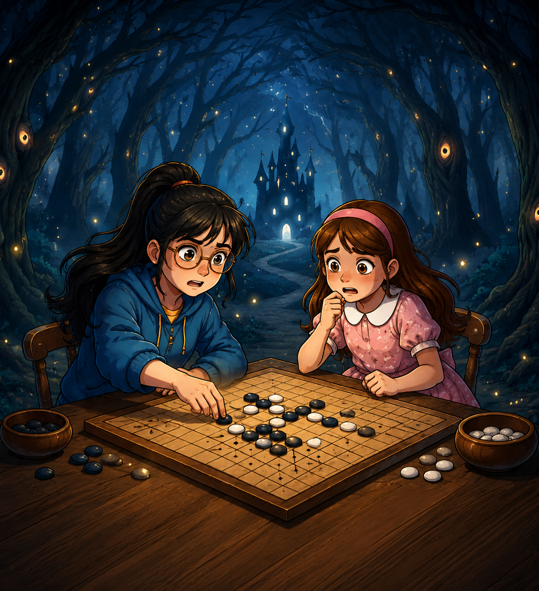
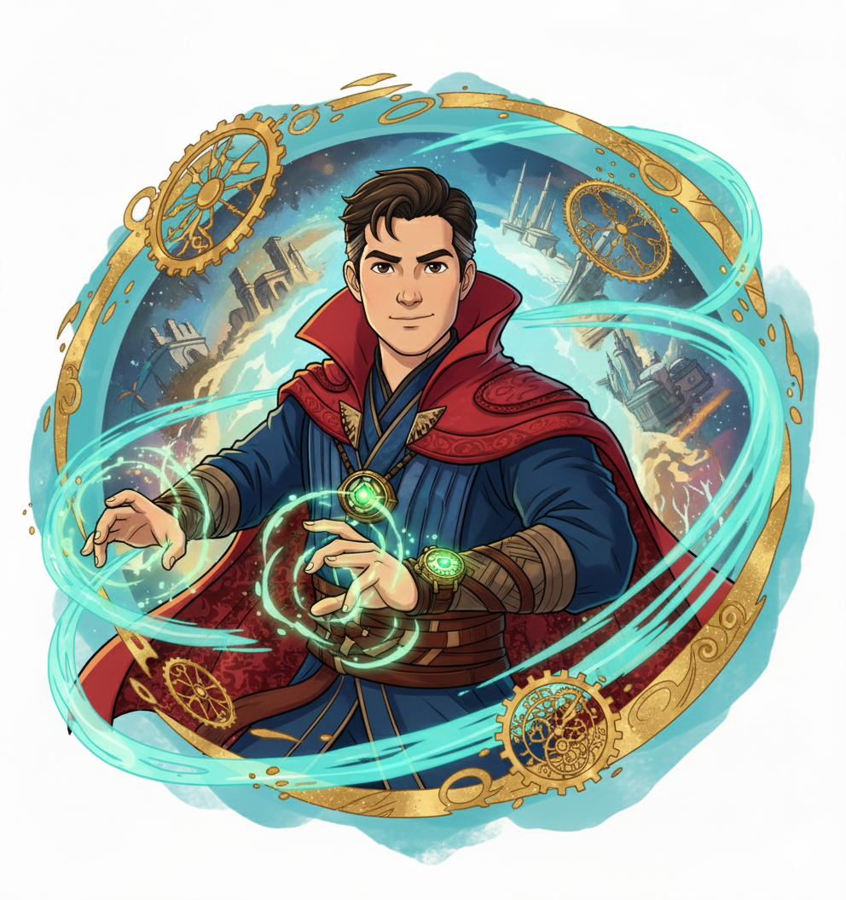
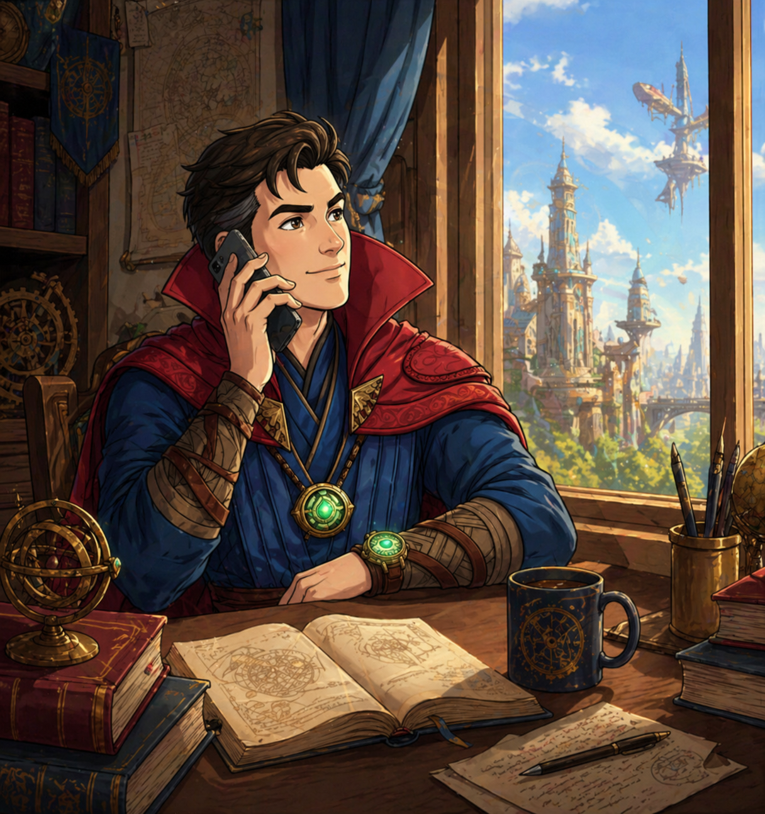

Holy Bible
오늘의 말씀
묵상
은혜
나를 살리는 생명의 말씀
BIBLE

2 Albums
나의 찬양 Vol.1
나의 찬양 Vol.2
6 Tracks
영혼 깊은 곳에서 올려드리는 고백
WORSHIP

SISTER SQUAD
단편소설
그림책
시 · 에세이
상상이 종이에 그려진 순간 일어나는 기적
BOOK
New Release
To Rise
Instrumental
On Spotify
AI가 만들어낸 선율, 영혼을 울리는 멜로디
MUSIC

AI Film
단편영화
뮤직비디오
영상
프레임에 담긴 무한한 세계
MOVIE

Play Now
미니게임
Sister Squad
아케이드
율이와 정이의 신나는 모험
GAME

Creator
신앙
창작
AI & Tech
나를 살게 한 것, 그리고 내가 만들어가는 것
ABOUT

Open to Collab
협업 제안
비즈니스
영감 나눔
새로운 영감과 비즈니스 제안
CONTACT
Guestbook
방명록
Messages
✦ Leave a Mark
당신의 발자국을 이곳에 남겨주세요